Porady
Czy wiedziałeś że...? Wiele kulinarnych porad i trików które sprawią, że gotowanie stanie się jeszcze większą zabawą i przyjemnością!
Wypieki
-
Potrzebujesz wałka do ciasta? Wykorzystaj butelkę wina!
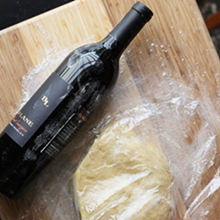
Jeśli używasz wałka do ciasta raz do roku, zachowaj miejsce w szafce i użyj butelki wina! Pusta lub pełna, usuń etykietę i zetrzyj wszelkie pozostałości, a następnie umyj zewnętrzną część butelki. Możesz rownież umieścić na cieście papier woskowany lub plastikową folię i wałkować z etykietą na butelce.
-
Zrób samodzielnie (bezglutenową) mąkę owsianą z płatków owsianych
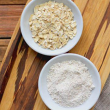
Jeśli szukasz mąki bezglutenowej o świetnym smaku, którą możesz przygotować samodzielnie, mąka owsiana jest zdecydowanie dla ciebie. "Przepis" jest dziecinnie prosty - wystarczy dodać trochę bezglutenowego owsa do blendera, i miksować do uzyskania pudrowej konsystencji!
-
Użyj folii aluminiowej aby dostsować wymiar blaszki do swojego ciasta
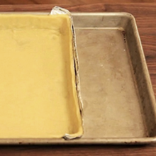
Chcesz upiec ciasto, ale nie możesz zanleźć odpowiedniej blaszki? Wykorzystaj folię aluminiową, wystarczy uformować ją w taki sposób jak na zdjęciu i problem zbyt dużej blaszki mamy z głowy.
-
Domowy brązowy cukier z melasą
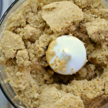
Jeśli nie posiadasz brązowego cukru bez problemu możesz zrobić go sam! Wystarczy wykorzystać zwykły biały cukier i połączyć go z melasą w proporcjach - 2 łyżki melasy na szlankę cukru.
Mięso
-
Soczyste i kruche mięso
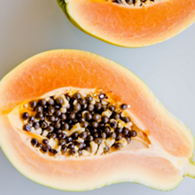
Jeśli mamy do czynienia z mniej delikatnym kawałkiem mięsa, takim jak schab, pierś z kurczaka czy perliczka warto skorzystać z tej porady. Oto kilka produktów, które nadadza mięsu odpowiednią miękkość i kruchość: papaja, kiwi, cytryna maślanka (zsiadłe mleko lub jogurt), białko.
-
Koniec z przywieraniem do patelni
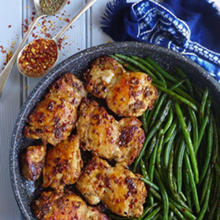
Ważną rolę odgrywa użytkowanie patelni z nieprzywierającą powłoką, ale tekże jej właściwe użytkowanie. Przed smażeniem patelnię musi być mocno rozgrzana. Mięso nalezy zamarynować z większym wyprzedzeniem. Nie powinno się zbyt często sprawdzać widelcem czy mięso jest gotowe, ponieważ powoduje to wypłynięcie z niego soków.
-
Marynowanie
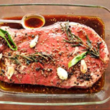
Marynatę możemy przygotowac na wiele sposobów, jej zadaniem jest nadanie mięsu aromatu, smaku i delikatności. Możemy do niej dodać przyprawy (liście laurowe, pieprz, tymianek, cząber), pokrojone warzywa (marchewkę, cebulę, czosnek, korzeń pietruszki). Jeśli do marynaty używamy wina, warto je najpierw zagotować, by odparować alkohol i skoncentrować smak. Doskonałe efekty daje także marynowanie w musztardzie.
-
Sposób na przesolone mięso
Przesolona potrawa to nie koniec świata, jest na to prosta rada. Wystarczy, że wlejemy na patelnię lub do brytfanny pół szklanki wytrawnego wina. Po wyparowaniu cieczy alkohol wchłonie nadmiar soli, mięso natomiast zyska przyjemny aromat wina, a to znacznie polepszy walory smakowe potrawy.
Warzywa i owoce
-
Mycie owoców i warzyw
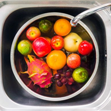
Umycie warzyw i owoców przed włożeniem ich do lodówki może znacząco wpłynąć na ich świeżość. Dzieje się tak za sprawą usuwaniu naturalnej powłoki ochronnej podczas mycia, która odpowiedzialna jest za proces zapobiegający gniciu warzyw i owoców. Jeśli zauważymy brud, świetnym rozwiązaniem będzie przetarcie ich suchą ściereczką lub papierowym ręcznikiem.
-
Przechowywanie owoców i warzyw razem
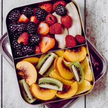
Niektóre warzywa i owoce w czasie dojrzewania wydzielają etylen, może on negatywnie wpływać na inne warzywa i owoce. Etylen wydzielają m.in. gruszki, śliwki, mango oraz pomidory. Do grupy warzyw i owoców wrażliwych na etylen zaliczamy marchewki, brokuły, dynie, arbuzy, ziemniaki oraz jabłka. Jeśli będziemy trzymać razem ze sobą te warzywa i owoce, dojdzie wtedy do szybszego procesu ich gnicia.
-
O czym należy pamiętać podczas gotowania?
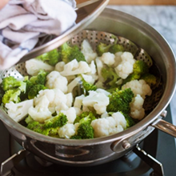
Podczas gotowania w strukturze, konsystencji oraz smaku warzyw i owoców zachodzą wyraźne zmiany, wpływa ono także na utratę witamin. Musimy pamiętać o tym, że warzywa gotowane bez obierania zachowują więcej witamin, ponieważ znajdują się one tuż pod skórką. Produkty gotowane w dużych kawałkach stracą mniej witamin niż te pokrojone w drobną kostkę. Co więcej warzywa należy gotować krótko, aby były al dente.
-
Jak wprowadzić do diety więcej warzyw i owoców?
Dobrym sposobem jest picie koktajli. Potrzebujesz jedynie kilku świerzych owoców lub warzyw, jogurtu i blendera. Porządną dawkę witamin zapewnią nam również sałatki. Wystarczy pokroić warzywa, dodać sos z oliwy z oliwek i przyprawy. Świetną przekąskę stanowią również suszone owoce, deser przygotowany z jogurtu naturalnego i owoców oraz domowe lody owocowe.
Jajka
-
Szybkie i proste obieranie
Zawsze po ugotowaniu jajka masz problem z obraniem? Jest na to sposób! Gotowane jajko łatwiej obrać ze skorupki, jeśli po wyjęciu z garnka natychmiast schłodzi się je zimną wodą. Inny sposób to nakłucie skorupki szpilką w miejscu komory powietrzenj przed gotowaniem.
-
Kilka omletów za jednym razem
Zamiast oddzielnie zmażyć omlety dla wielu osób, możesz przyrządzić całą partię jaj na raz. Wystarczy zalać blachę roztrzepanym jajkiem, mlekiem, solą, pieprzem i dodatkowymi składnikami. Piec jajka przez 15 minut w temperaturze 230 stopni, a następnie pokroić na kwadraty.
-
Sposób na przesoloną zupę
Jeśli zupa jest przesolona, należy wrzucić do niej dwa surowe białka, a następnie przecedzić ją przez sito lub zebrać ścięte białko z powierzchni. Sposób ten pomaga również, gdy zupa jest zbyt mętna. Białko wiąże wszystkie cząsteczki i osadza się na powierzchni.
-
Ekspresowy przepis na jajecznicę
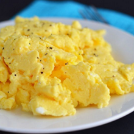
Szukasz sposobu na szybkie śniadanie? Nie chcesz robić bałaganu w kuchni? Połącz jajka z mlekiem, solą i pieprzem w misce, po czym wstaw do mikrofali. Wyjmij jajka po 45 sekundach, wymieszaj i wstaw na kolejne 45 sekund lub do momentu, aż jajka stężeją.
Cytrusy
-
Zachowaj świeżość owoców i warzyw
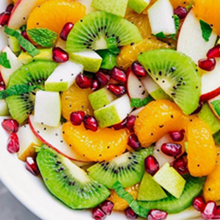
Znasz to uczucie, kiedy sałatka owocowa po paru godzinach zaczęła wyglądać mniej apetycznie, niż zaraz po zrobieniu? Sok z cytryny może pomóc w takich sytuacjach. Wyciskanie go na owoce i warzywa, takich jak ziemniaki, jabłka, gruszki i awokado zapobiega brązowieniu i utrzymuje ich świeżość. Guacamole bez niego zwyczajnie nie jest kompletne.
-
Cytrynowe kostki lodu i zamrożona skórka
Cystrusowy sok i skórka to składniki, które zawsze warto mieć pod ręką. Są zdrowe i wspaniale smakują. Dobrym sposobem jest napełnienie silikonowej foremki wodą z sokiem / skórką cystrusową. Po zamrożeniu możemy użyć kostek lodu przy gotowaniu, lub do zrobienie odświeżającej lemoniady.
-
Koniec z poplamionymi dłońmi, deskami do krojenia i sztućcami
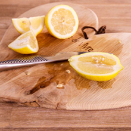
Marchew, buraki, szpinak, pomidor i mnóstwo innych warzyw może pozostawiać uporczywe plamy na dłoniach i narzędziach kuchennych. Wetrzyj trochę soku z cytryny na dłonie lub poplamione powierzchnie i zmyj wodą. W przypadku trudniejszych plam, pozostaw na 15 minut i powtórz w razie potrzeby.
-
Maksymalna ilość soku z cytrusów
Aby wycisnąć maksymalną ilość soku z cytryny, pomarańczy, czy limonki nie marnując go wcześniej należy poturlać owoc na blacie mocno dociskając. Innym sposobem jest wstawienie go do mikrofali na 20 sekund. Następnie przecinamy owoc i wyciskamy.
Zioła
-
Zachowaj świeżość ziół
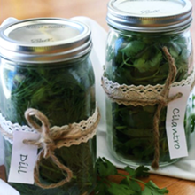
Nie pozwól zniszczyć świeżości ziół. Posiekaj je i umieścić w pojemniku na kostki lodu z oliwą z oliwek. Kiedy będziesz przygotowywała posiłek i potrzebowała świeżych ziół, nie będziesz musiała za każdym razem kupować nowych ziół. Wystarczy, że użyjesz tych wcześniej zamrożonych.
-
Jak zioła wpływają na organizm?
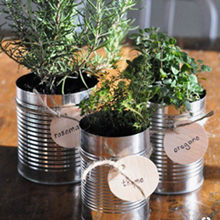
Świeże zioła, obok smakowych i zapachowych walorów, mają dobroczynny wpływ na ludzki organizm. Bazylia przyspiesza trawienie, ale i przeciwdziała wzdęciom. Oregano posiada antyseptyczne i przeciwzapalne właściwości. Rozmaryn warto dodawać do mięs, pasztetów, farszów ponieważ ułatwia trawienie tłuszczów. Majeranek natomiast zawiera duże ilości wapnia.
-
Zdrowy zamiennik
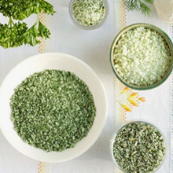
Wykorzystywanie dużej ilości ziół podczas przygotowania posiłków oraz bogactwo ich smaków przyczyni się do zmniejszonego zapotrzebowania na spożycie soli. I choć jest to najpopularniejsza przyprawa na świecie, warto ograniczyć jej stosowanie do minimum. Znakomitym zamiennikiem kuchennej soli jest naturalny sos sojowy, który mimo skojarzeń z kuchnią azjatycką, jest coraz częściej doceniany w europejskiej.
Różności
-
Czego nie powinniśmy zamrażać?
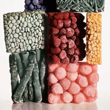
Zamrażamy produkty spożywcze, aby wydłużyć ich przydatność do spożycia, ale czy zawsze powinniśmy to robić? Nie należy zamrażać m.in. śmietany, jogurtu ani majonezu ponieważ warzą się. Ser żółty staje się wtedy kruchy. Grzyby tracą swój smak. Butelki z napojami gazowanymi mogą eksplodować. Poza tym nie powinniśmy również mrozić rzodkwi, ziemniaków, kalafiora, ani cebuli.
-
3 porady na idealnie ugotowane mleko
Każdemu z nas kiedyś wykipiało lub przypaliło się mleko, oto wskazówki jak tego uniknąć. Aby mleko nie wykipiało wystarczy posmarować brzeg garnka masłem. Ważne, aby przed gotowaniem przepłukać garnek zimną wodą - wtedy mleko się nie przypali. Jeśli nie chcemy, aby utworzył się kożuszek wrzucamy do mleka kostkę lodu.
-
Sposób na świeże pieczywo
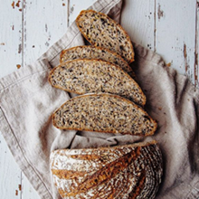
Aby chleb dłużej zachował świeżość nie powinniśmy przechowywać go w foliowej torebce, skutecznym sposobem jest także umieszczenie w pojemniku z chlebem jabłka. Świeże bułki możemy zamrozić, póniej wystarczy zwilżyć ich powierzchnię i wstawić do piekarnika.
-
Triki makaronowe
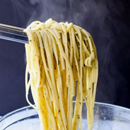
Makaron należy gotować w dużej ilości posolonej wodyz dodatkiem łyżeczki oleju, aby nie sklejał się. Po ugotowaniu hartujemy go zimną wodą. Będzie smaczniejszy, jeśli do wody dodamy kostkę bulionową. Aby makaron nie wykipiał wystarczy podczas gotowania zostawić w garnku chochlę.